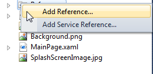
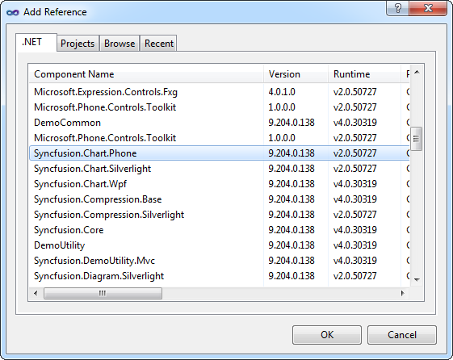

To deploy Essential Chart to the application:
1. Go to Solution Explorer. Right-click the References folder and click Add Reference.

Figure 11: Adding Reference
2. Add the following assemblies to the project References folder.
· Syncfusion.Chart.Phone.dll
· Syncfusion.Shared.Phone.dll

Figure 12 : Add Reference
3. Add Syncfusion.Chart.Phone reference in XAML or C# code as follows.
|
[XAML]
xmlns:syncfusion="clr-namespace:Syncfusion.Phone.Chart;assembly=Syncfusion.Chart.Phone" |
|
[C#]
using Syncfusion.Phone.Chart; |
Essential Chart is deployed in your application
Intialization of Basic Chart and Its Child Control
The following steps illustrate the initialization of basic chart and its child control in both XAML and C# based on the requirement of your application.
To add a Chart control in Windows Phone application, use thefollowing code snippets:
|
[XAML]
<syncfusion:Chart x:Name="MyChart"> <!--Area control code--> </syncfusion:Chart> |
|
[C#]
using Syncfusion.Phone.Chart; Chart chart = new Chart(); |
To add Chart Area in chart control, use thefollowing code snippets:
|
[XAML]
<syncfusion:Chart x:Name="MyChart"> <syncfusion:ChartArea GridBackground="LightBlue"> <!--Area Header, Legends, Axes, Series Controls code--> </syncfusion:ChartArea> </syncfusion:Chart> |
|
[C#]
Chart MyChart = new Chart(); ChartArea area = new ChartArea(); area.GridBackground = new SolidColorBrush(Colors.LightGray); MyChart.Areas.Add(area); |
To add Chart Area Header and Legends in the Chart Area, use thefollowing code snippets:
|
[XAML]
<syncfusion:ChartArea GridBackground="LightBlue"> <syncfusion:ChartArea.Header> <TextBox Text="Area Header" FontWeight="Bold" HorizontalAlignment="Center"/> </syncfusion:ChartArea.Header>
<syncfusion:ChartArea.Legends> <syncfusion:ChartLegend CheckboxVisibility="Collapsed" IconVisibility="Visible"/> </syncfusion:ChartArea.Legends> </syncfusion:ChartArea> |
|
[C#]
//To Initialize the Header and Legends TextBox headerdata = new TextBox(); ChartLegend chartlegend = new ChartLegend(); chartlegend.CheckboxVisibility = Visibility.Collapsed; chartlegend.IconVisibility = Visibility.Visible; headerdata.Text = "Area Header";
//To Add Header and Legend in Chart Area MyChart.Areas[0].Header = headerdata; MyChart.Areas[0].Legends = chartlegend; |
To add chart axes in Chart Area, using thefollowing code snippets:
|
[XAML]
<syncfusion:ChartArea GridBackground="LightBlue"> <syncfusion:ChartArea.PrimaryAxis> <syncfusion:ChartAxis Header="X-Axis" IsAutoSetRange="True" GridLineStroke="White"/> </syncfusion:ChartArea.PrimaryAxis>
<syncfusion:ChartArea.SecondaryAxis> <syncfusion:ChartAxis Header="Y-Axis" IsAutoSetRange="False" Range="0,30" Interval="5"/> </syncfusion:ChartArea.SecondaryAxis> </syncfusion:ChartArea> |
|
[C#]
//To Initialize the Primary Axis ChartAxis primary = new ChartAxis(); primary.IsAutoSetRange = true; primary.Header = "X-Axis"; primary.GridLineStroke = new SolidColorBrush(Colors.White);
//To Initialize the Secondary Axis ChartAxis secondary = new ChartAxis(); secondary.IsAutoSetRange = false; secondary.Range = new DoubleRange(0, 50); secondary.Interval = 10;
//To add Axes in Chart Area MyChart.Areas[0].PrimaryAxis = primary; MyChart.Areas[0].SecondaryAxis = secondary; |
To add series in the Chart Area, use:
|
[XAML]
<syncfusion:ChartArea GridBackground="LightBlue"> <syncfusion:ChartSeries Data="1,4,2,7,3,8,4,3,5,9" Interior="Blue" /> </syncfusion:ChartArea> |
|
[C#]
//To Initialize the Series ChartSeries series = new ChartSeries(); ChartPointsCollection datas = new ChartPointsCollection(); datas.Add(new ChartPoint(1, 4)); datas.Add(new ChartPoint(2, 7)); datas.Add(new ChartPoint(3, 8)); datas.Add(new ChartPoint(4, 3)); datas.Add(new ChartPoint(5, 9)); series.Data = datas; series.Interior= new SolidColorBrush(Colors.Blue); //To add Series in chart Area SyncfusionChart.Areas[0].Series.Add(series); |
The basic chart and its child control are initialized.